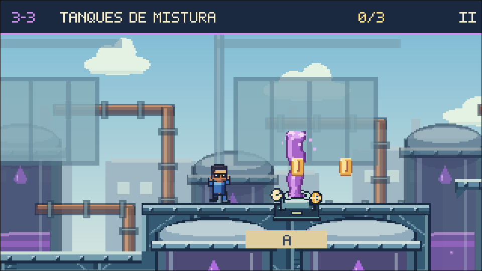
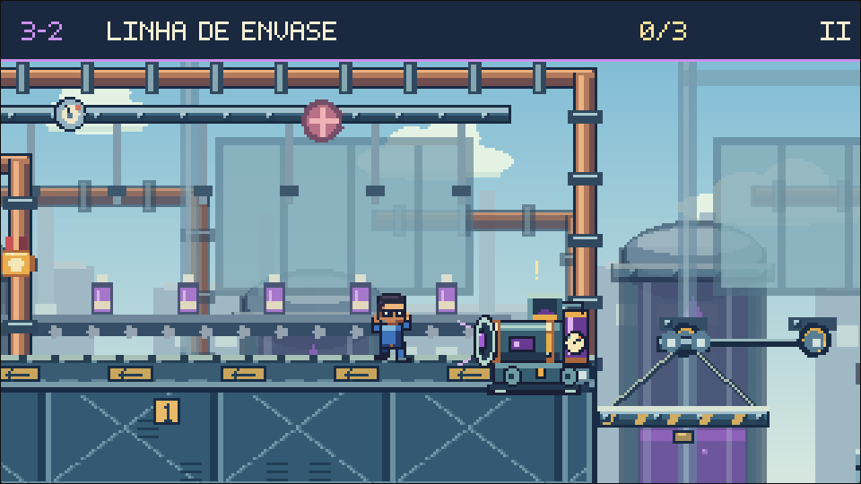
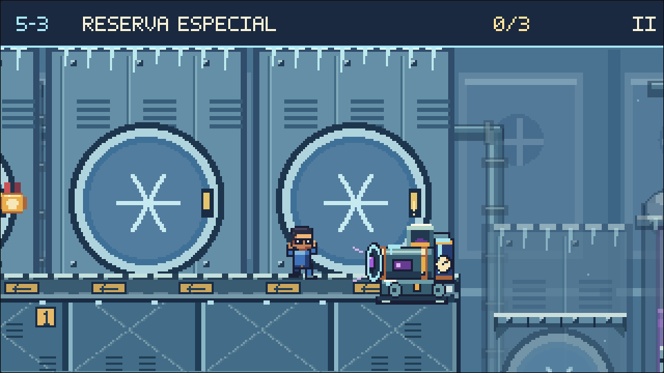
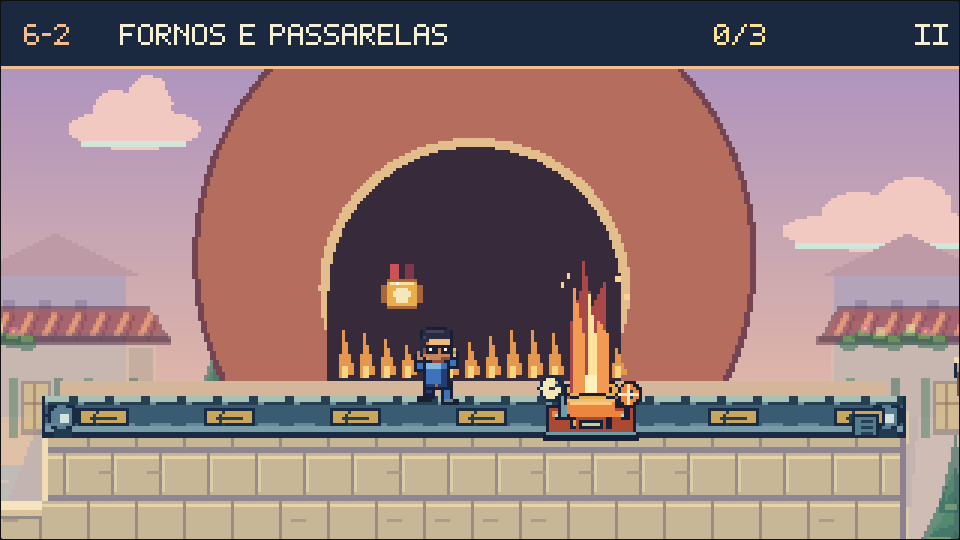
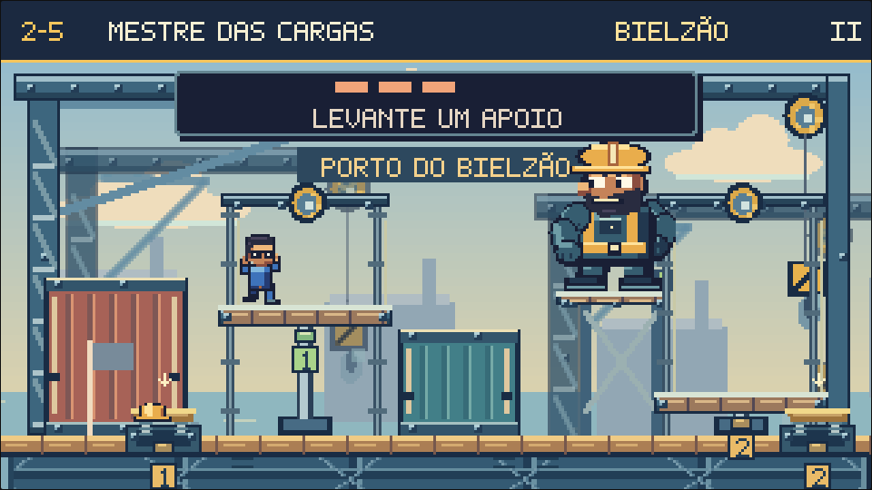
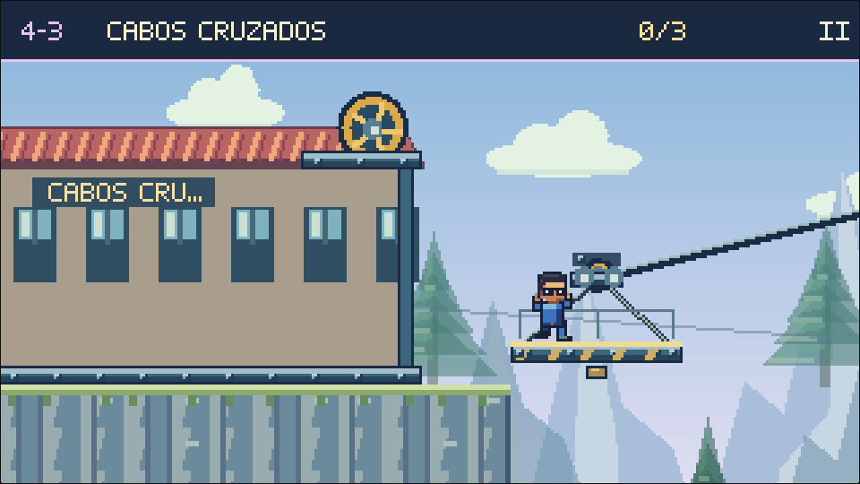
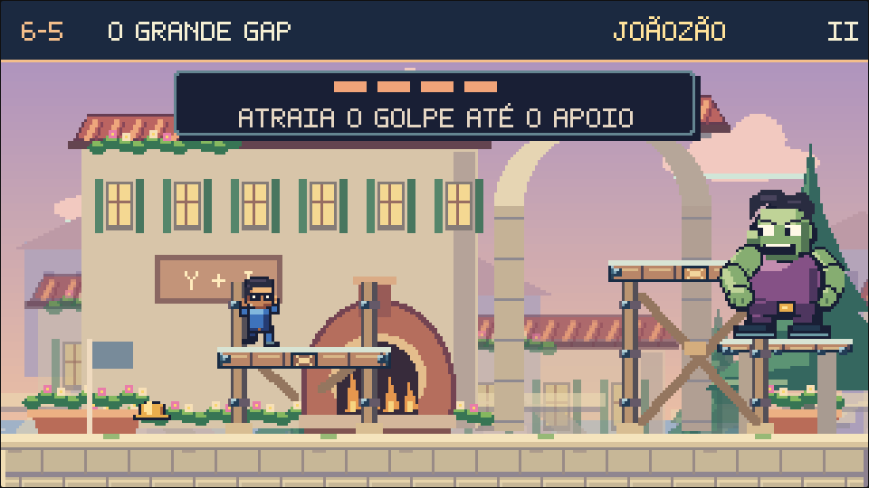
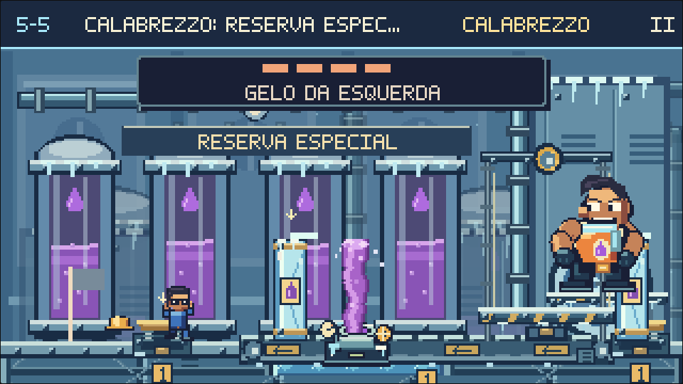
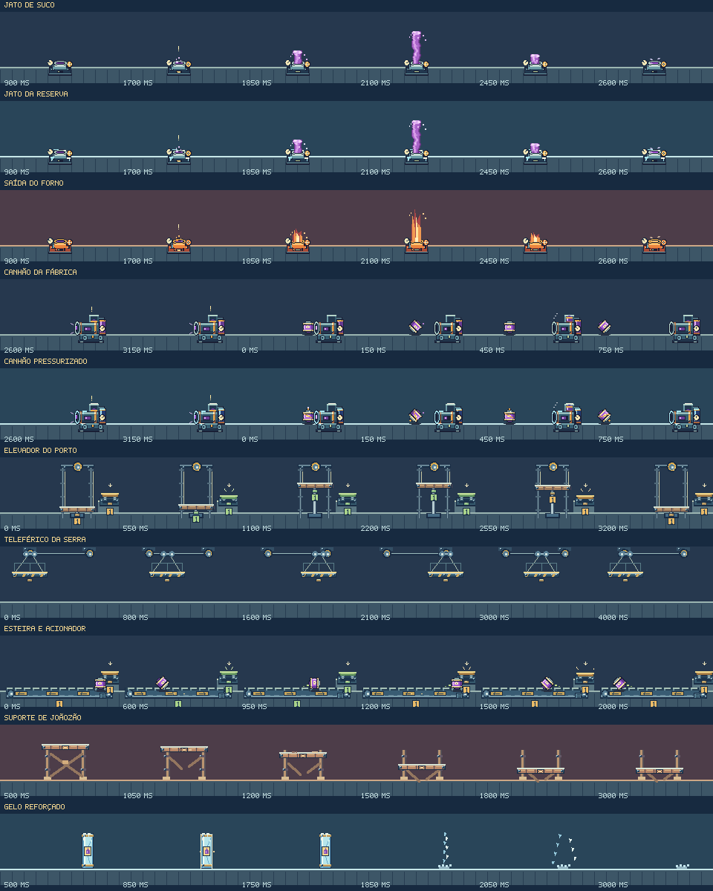

← Galeria de produção
Mecanismos em movimento
Jatos, canhões, transporte de cargas, acionadores e estruturas sob impacto. As sequências abaixo são exportadas do renderizador e da simulação do jogo, em resolução nativa. Use a linha do tempo para examinar cada momento.
O jato ganha e perde altura junto com sua área de dano. Névoa, gotas soltas e fagulhas são decorativas. O canhão sinaliza o disparo, recua, descarrega o ar e recebe um novo barril. A rotação dos barris acompanha o deslocamento.
Dentro das fases
Cenas com câmera e posição preparadas para conferir escala, contraste e encaixe com o terreno.

Fábrica de Suco: bocal, espuma lilás e núcleo em movimento.
Canhão com tubo, carregador, reservatório e manômetro.
Reserva Gelada: geada e barris pressurizados.
Domínio Pizzarino: metal quente e línguas de fogo.Transporte, comando e resistência

Guia fixa, cabos, pistão e apoio móvel.
Trilho, carro de polias e suspensão com travessas.
O deck desce quando as travessas cedem.
Geada, braçadeiras e símbolo de barril pressurizado.Quadros de referência

Preparação, emissão, recuo e dissipação. Verificação desta revisão.